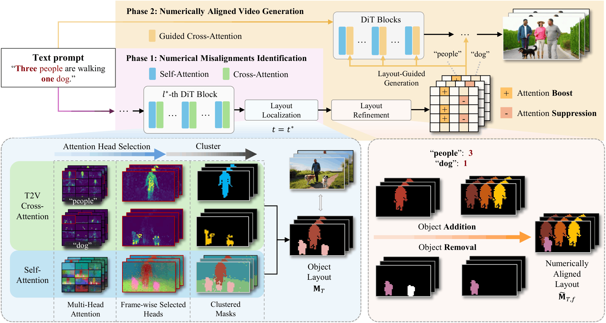

Case 1
Prompt: Two kids playing with a dog and a cat.
Wan2.1-1.3B(Baseline)
NUMINA
CVPR 2026
Training-free identify-then-guide framework for count-accurate text-to-video generation
1Huazhong University of Science and Technology, 2Zhejiang University, 3Afari Intelligent Drive
* Equal contribution. † Project lead. ✉ Corresponding author.
NUMINA is a training-free framework that tackles numerical misalignment in text-to-video diffusion models - the persistent failure of T2V models to generate the correct count of objects specified in prompts (e.g., producing 2 or 4 cats when "three cats" is requested). Unlike seed search or prompt enhancement approaches that treat the generation pipeline as a black box and rely on brute-force resampling or LLM-based prompt rewriting, NUMINA directly identifies where and why counting errors occur inside the model by analyzing cross-attention and self-attention maps at selected DiT layers. It constructs a countable spatial layout via a two-stage clustering pipeline, then performs layout-guided attention modulation during regeneration to enforce the correct object count - all without retraining or fine-tuning. On our introduced CountBench, this attention-level intervention provides principled, interpretable control over numerical semantics that seed search and prompt enhancement fundamentally cannot achieve, improves counting accuracy by up to 7.4% on Wan2.1-1.3B. Furthermore, because NUMINA operates partly orthogonally to inference acceleration techniques, it is compatible with training-free caching methods such as EasyCache, which accelerates diffusion inference via runtime-adaptive transformer output reuse.
Our method is highly robust for remove operations.
Prompt: Two kids playing with a dog and a cat.
Wan2.1-1.3B(Baseline)
NUMINA
Prompt: Two penguins sliding across the icy landscape, having fun.
Wan2.1-1.3B(Baseline)
NUMINA
Our method also demonstrates innovation and effectiveness for addition scenarios.
Prompt: Four children making two snowman.
Wan2.1-1.3B(Baseline)
NUMINA
Prompt: Four students reading books under the tree.
Wan2.1-1.3B(Baseline)
NUMINA
Prompt: Two kittens playing with two yarn balls.
Wan2.1-1.3B(Baseline)
NUMINA
Prompt: Five explorers travelling through a dense jungle.
Wan2.1-1.3B(Baseline)
NUMINA
Even these cutting-edge models frequently fail to satisfy the precise numerical constraints specified in the prompt.
Prompt: Three cyclists riding through a trail with three mountain goats.
NUMINA
Veo 3.1
Grok Imagine
NUMINA remains effective across different models.
Prompt: Four chefs preparing a meal in the kitchen.
Wan2.1-14B(Baseline)
NUMINA
Prompt: Four athletes riding bicycles through a mountain trail.
Wan2.2-5B(Baseline)
NUMINA
Text-to-video diffusion models have enabled open-ended video synthesis, but often struggle with generating the correct number of objects specified in a prompt. We introduce NUMINA, a training-free identify-then-guide framework for improved numerical alignment. NUMINA identifies prompt-layout inconsistencies by selecting discriminative self- and cross-attention heads to derive a countable latent layout. It then refines this layout conservatively and modulates cross-attention to guide regeneration. On the introduced CountBench, NUMINA improves counting accuracy by up to 7.4% on Wan2.1-1.3B, and by 4.9% and 5.5% on 5B and 14B models, respectively. Furthermore, CLIP alignment is improved while maintaining temporal consistency. These results demonstrate that structural guidance complements seed search and prompt enhancement, offering a practical path toward count-accurate text-to-video diffusion.

The pipeline of our NUMINA follows a two-phase paradigm. Given a text prompt containing numerals, we first perform the numerical misalignment identification to extract explicitly countable layouts from attention maps. Based on the layout, we further conduct a refinement and a layout-guided generation for the numerically aligned video generation.
@inproceedings{sun2026numina,
title={When Numbers Speak: Aligning Textual Numerals and Visual Instances in Text-to-Video Diffusion Models},
author={Sun, Zhengyang and Chen, Yu and Zhou, Xin and Li, Xiaofan and Chen, Xiwu and Liang, Dingkang and Bai, Xiang},
booktitle={Proc. of IEEE Intl. Conf. on Computer Vision and Pattern Recognition},
year={2026}
}